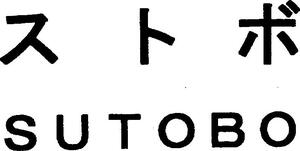

Trade Mark Journal No.2025/041 10 October 2025
WO0000001279271 (11,20)
Office of origin: Japan
Date of International Registration:28 August 2015
Date of designation in the UK:
29 August 2025

- Class 11
- Pet grooming box, where components required for grooming a pet, such as a grooming table and a bathtub, are compactly stored inside the small, easily-assembable, portable box, thereby having functions to prevent groomed hair from scattering outside and collect the groomed hair; warm air heating pets dryers for industrial purposes for drying pets; bath fittings, namely, bathtubs; toilet bowls and seats sold as a unit; prefabricated bathrooms sold as a unit, namely, bathtubs and bathroom sinks; machines and apparatus for use in beauty salons or barbers' shops, not including hairdressing chairs, namely, industrial dryers for drying pets; laundry dryers, electric, for industrial purposes; cooking equipment for industrial purposes, namely, ultra violet light sterilizers for dishes; industrial dish drying apparatus and installations, namely, electric dish dryers; dish disinfectant apparatus for industrial purposes, namely, sterilizing cabinets for dishes.
- Class 20
- Furniture; hairdresser's chairs; barbers' chairs; cushions; pillows; mattresses; beds for household pets; dog kennels; nesting boxes for small birds.
DREAM INDUSTRY Co., Ltd.
Representative: TANIDA Ryuichi, 7th Fl., Toa Bldg.,, 5-7, Minami-honmachi 4-chome,, Chuo-ku, Osaka-shi, OSAKA 541-0054, JAPAN